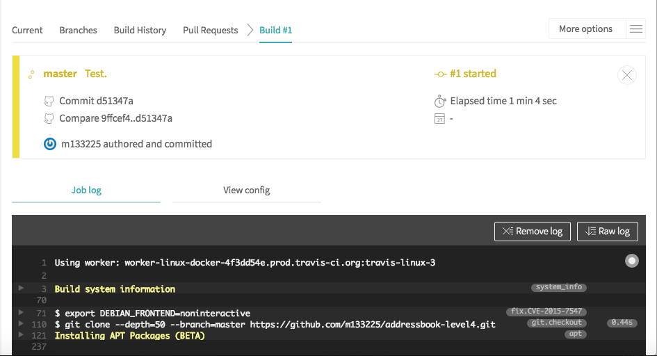

Travis CI is a Continuous Integration platform for GitHub projects.
Travis CI can run the projects' tests automatically whenever new code is pushed to the repo. This ensures that existing functionality and features have not been broken by the changes.
The current Travis CI set up performs the following things whenever someone push code to the repo:
-
Runs the
./gradlew clean headless allTests coverage coveralls -icommand (see UsingGradle for more details on what this command means). -
Automatically retries the build up to 3 times if a task fails.
-
Runs additional repository-wide checks.
If you would like to customise your travis build further, you can learn more about Travis from Travis CI Documentation.
Setting up Travis CI
-
Fork the repo to your own organization.
-
Go to https://travis-ci.org/ and click
Sign in with GitHub, then enter your GitHub account details if needed.
-
Head to the Accounts page, and find the switch for the forked repository.
-
If the organization is not shown, click
Review and addas shown below:
This should bring you to a GitHub page that manages the access of third-party applications. Depending on whether you are the owner of the repository, you can either grant access

or request access

to Travis CI so that it can access your commits and build your code.
-
If repository cannot be found, click
Sync account
-
-
Activate the switch.
-
This repo comes with a
.travis.ymlthat tells Travis what to do. So there is no need for you to create one yourself. -
To see the CI in action, push a commit to the master branch!
-
Go to the repository and see the pushed commit. There should be an icon which will link you to the Travis build.

-
As the build is run on a provided remote machine, we can only examine the logs it produces:

-
-
If the build is successful, you should be able to check the coverage details of the tests at Coveralls
-
Update the link to the 'build status' badge at the top of the
README.adocto point to the build status of your own repo.
Repository-wide checks
In addition to running Gradle checks, we also configure Travis CI to run some repository-wide checks. Unlike the Gradle checks which only cover files used in the build process, these repository-wide checks cover all files in the repository. They check for repository rules which are hard to enforce on development machines such as line ending requirements.
These checks are implemented as POSIX shell scripts, and thus can only be run on POSIX-compliant operating systems such as macOS and Linux. To run all checks locally on these operating systems, execute the following in the repository root directory:
./config/travis/run-checks.shAny warnings or errors will be printed out to the console.
Implementing new checks
Checks are implemented as executable check-* scripts within the config/travis/ directory. The run-checks.sh script will automatically pick up and run files named as such.
Check scripts should print out errors in the following format:
SEVERITY:FILENAME:LINE: MESSAGE
where SEVERITY is either ERROR or WARN, FILENAME is the path to the file relative to the current directory, LINE is the line of the file where the error occurred and MESSAGE is the message explaining the error.
Check scripts must exit with a non-zero exit code if any errors occur.